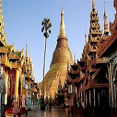
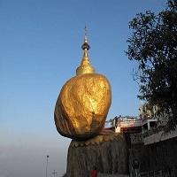
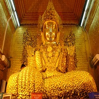
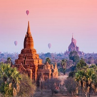

History of Myanmar!
Myanmar has a long and complex history. Many peoples have lived in the region and the history began. The first identifiable civilization is that of the Mon. The Mon probably began migrating into the area in about 300 BC. and their first kingdom Suwarnabhumi. was founded around the port of Thaton in about 300 BC. The Pyu arrived in Myanmar in the 7th century and established city kingdoms at Binnaka. Mongamo. Sri Ksetra. and Halingyi. During this period. Myanmar was part of an overland trade route from China to India. By 849. the Burmans had founded a powerful kingdom centered on the city of Bagan and filled the void left by the Pyu. ....The kingdom grew in relative isolation until the reign of Anawrahta (1044 - 77) who successfully unified all of Myanmar by defeating the Mon city of Thaton in 1057. After the collapse of Bagan authority. Myanmar was divided once again. The Burmans had restablished themselves at the city of Ava by 1364. where Bagan culture was revived and a great age of Burmese literature ensued. The kingdom lacked easily defendable borders. however. and was overrun by the Shan in 1527. Surviors of the destruction of Inwa eventually established a new kingdom centered on Taungoo in 1531 led by Tabinshwehti (reigned 1531-50). who once again unified most of Myanmar. A popular Burmese leader named Alaungpaya drove the Bago forces out of northern Myanmar by 1753. and by 1759 he had once again conquered Pegu and southern Myanmar while also regaining control of Manipur. He established his capital at Rangoon. now known as Yangon.
Dynasties of the Past
The Mon| The Pyu| The Bagan Kingdom| Inwa and Bago| Taungoo Dynasty| Konbaung Dynasty| War with Britain| During the British Ruling|Konbaung Dynasty
It did not take long for a new dynasty to arise and bring Myanmar to its greates power yet. A popular Burmese leader named Alaungpaya drove the Bago forces out of northern Myanmar by 1753. and by 1759 he had once again conquered Bago and southern Myanmar while also regaining control of Manipur. He established his capital at Rangoon. In 1760. he briefly conquered Tenasserim and marched on Ayutthaya. but his invasion failed and he was killed. His son Hsinbyushin (ruled 1763-76) returned to Ayutthaya in 1766 and had conquered it before the end of the next year. Even China took notice of Myanmar now. but Hsinbyushin sucessfully repulsed four Chinese invasions between 1766 and 1769. Another of Alaungpaya's sons. Bodawpaya (ruled 1781-1819). lost Ayutthaya. but added Arakan (1784) and Tenasserim (1793) to the kingdom as well. In Jaunary 1824. during the reign of King Bagyidaw (ruled 1819-37). a general named Maha Bandula succeeded in conquering Assam. bringing Myanmar face to face with British interests in India.
War with Britain
In response to the continued conquests of Myanmar. the British and the Siamese joined forces against Myanmar in 1824. The First Anglo-Burmese War (1824-26) ended in a British victory. and by the Treaty of Yandaboo. Myanmar lost Assam. Manipur. Arakan. and Tenasserim. As the century wore on. the British began to covet the natural resources of Myanmar and wanted to secure their supply route to Singapore. As a result. they provoked the Second Anglo-Burmese War in 1852. annexing Bago province and renaming it Lower Burma. The war resulted in a revolution in Myanmar. with King Pagin Min (ruled 1846-52) being replaced by his half brother. Mindon Min (ruled 1853-78)). King Mindon tried to modernise the Burmese state and economy to resist British encroachments. and he established a new capital at Mandalay. which he proceeded to fortify. This was not enough to stop the Birtish. however. who claimed that Mindon's son Thibaw Min (ruled 1878-85) was a tyrant intending to side with the French and declared war once again in 1885. conquering the remainder of the country in the Third Anglo-Burmese War.
During the British Ruling
Britain made all of Burma a province of India in 1886 with the capital at Rangoon. Traditional Myanmar society was drastically altered by the ending of the monarchy and the separation of church and state. Though war officially ended after only a couple of weeks. resistance continued in northern Myanmar until 1890. with the British finally resorting to a systematic destruction of villages and appointment of new officials to finally halt the guerilla activity. The economic nature of society also changed drastically. After the opening of the Suez Canal. the demand for Burmese rice grew and vast tracts of land were opened up for cultivation. However. in order to prepare the new land for cultivation. farmers were forced to borrow money from Indian moneylenders at high interest rates and were often eveicted for failure to pay back the loan. Imported Indian labor ended up with most of the jobs. and whole villages became lawless dens full of the unemployed. While the Burmese economy grew. all the power and wealth was in the hands of several British firms and the Burmese people did not reap the rewards.
A new generation of Burmese leaders arose in the early twentieth century from amongst the educated classes that were permitted to go to London to study law. They came away from this experience with the belief that the Burmese situation could be improved through peaceful protest and negotiations. Peaceful strikes in the early 1920s led to a constitutional reform in 1923 that created a partialy elected legislature with limited powers. but some people began to feel that the rate of change was not fast enough and the reforms not expansive enough. Some of these dissatisfied students founded a new group called Thakin (an ironic name as thakin means "master" in the Burmese language. and this was the term that students were required to use when addressing their British professors. whom they were coming to resent). A peasant rebellion led by Saya San that started in 1930 and lasted for two years gave the Thakin their chance. Though they did not actually participate in the rebellion. they did win the trust of the peasants and displaced the older generation of London-educated elites at the head of the Burmese nationalist movement. They staged a strike in 1936. which was notable because it was during this strike that Thakin Nu and Aung San joined the movement.
The British seperated Burma from India in 1937 and granted the colony a new constitution calling for a fully elected assembly. but many Burmese felt that this was just a ploy to exclude them from any further Indian reforms. Ba Maw served as the first prime minister of Burma. but he was forced out by U Saw in 1939. who served as prime minister from 1940 to 1942. Burmese nationalists saw the outbreak of World War II as an opportunity to extort concessions from the British in exchange for support in the war effort. but the British would have none of it. issuing an arrest warrant for Aung San. who escaped to China. The Japanese offered him support. and he briefly returned to Burma to enlist the aid of twenty-nine young men who went to Japan with him to receive military training as the so-called "Thirty Comrades." The Japanese quickly declared Burma independant. and when they occupied Bangkok in December 1941.
Aung Sang announced the formation of the Burma Independence Army (BIA) in anticipation of Japanese liberation. The Japanese duly moved into Burma in 1942 and disbanded the BIA. forming the smaller Burma Defense Army in its place with Aung Sang still at the head. Ba Naw was declared head of state. and his cabinet included both Aung Sang and Thakin Nu. It soon became apparent that Japanese promises of independence were merely a sham and that Ba Maw was just a puppet. As the war turned against the Japanese. they declared Burma a fully sovereign state in 1943. but this was just another facade. Disillusioned. Aung San began negotitations with Lord Mountbatten in October 1943 and officially joined the Allies with his renamed Burma National Army (BNA) in March 1945. During this period.
Go to top^^^Well-Known Places
Shwe Dagon Pogoda

Kyaiktiyo (Golden Rock)

Mahar Myat Muni Pagoda

Bagan (Ancient City)
 facebook
facebook LinkedIn
LinkedIn